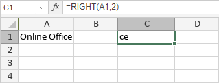

RIGHT/RIGHTB funkcija
RIGHT/RIGHTB funkcija je jedna od funkcija za tekst i podatke. Koristi se za izdvajanje podstringa iz stringa počevši od desnog kraja, u zavisnosti od broja karaktera koje navedete. RIGHT funkcija je namenjena jezicima koji koriste jednobajtni karakter set (SBCS), dok je RIGHTB namenjena jezicima koji koriste dvobajtni karakter set (DBCS) poput japanskog, kineskog, korejskog itd.
Sintaksa
RIGHT(text, [num_chars])
RIGHT funkcija ima sledeće argumente:
| Argument | Opis |
|---|---|
| text | String iz kojeg želite da izdvojite podstring. |
| num_chars | Broj karaktera podstringa. Mora biti veće ili jednako 0. Opcioni argument; ako se izostavi, podrazumevana vrednost je 1. |
RIGHTB(text, [num_bytes])
RIGHTB funkcija ima sledeće argumente:
| Argument | Opis |
|---|---|
| text | String iz kojeg želite da izdvojite podstring. |
| num_bytes | Broj karaktera podstringa, zasnovan na bajtovima. Opcioni argument. |
Napomene
Kako primeniti RIGHT/RIGHTB funkciju.
Primeri
Slika ispod prikazuje rezultat koji vraća RIGHT funkcija.
